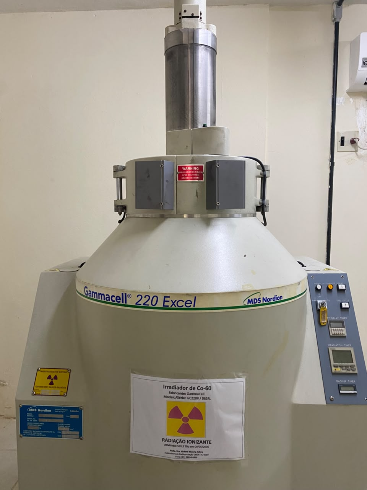
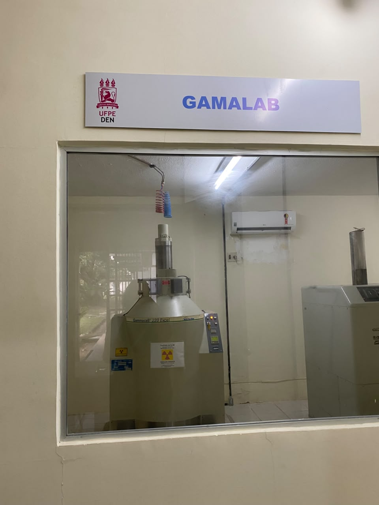

Sobre
O GAMALAB, vinculado ao Departamento de Energia Nuclear da UFPE, apoia atividades de pesquisa e desenvolvimento tecnológico com experimentos em ciência dos materiais, nanotecnologia, farmacologia e aplicações em ciências biológicas e da saúde.
A administração é do Grupo de Dosimetria e Instrumentação Nuclear, que dispõe da infraestrutura necessária para irradiações seguras e de acordo com os princípios de radioproteção. A coordenadora é credenciada pela Comissão Nacional de Energia Nuclear (CNEN) como Supervisora de Proteção Radiológica e responde perante esse órgão pelo uso adequado dos equipamentos de irradiação.
A coordenação também é responsável pelo controle das fontes radioativas do DEN: elabora o plano de proteção radiológica e as instruções aos usuários sobre o manuseio adequado das fontes.
Instalações e equipamentos
- Irradiador Gamma CellFabricante Nordion (Canadá). Fonte de Co-60. Irradia amostras de até 1 litro.
- Taxa de dose10 kGy/h em abril de 2008.
- AplicaçõesColoração de gemas, mutações genéticas e esterilização de materiais, entre outras.
O laboratório foi montado com apoio da FINEP.


Multiusuário
Este laboratório integra o CIDIN e está aberto a pesquisadores da UFPE e de outras instituições.
- SolicitaçãoEnvie ao laboratório o projeto, o tipo de análise ou irradiação e o número de amostras.
- AutorizaçãoA coordenação avalia a viabilidade técnica e a segurança e responde ao pedido.
- AgendamentoCom o pedido aprovado, a equipe marca a data de uso do equipamento ou da análise.
- Uso e segurançaO uso segue o plano de proteção radiológica e as instruções do laboratório.
Contato
Endereço
Departamento de Energia Nuclear, UFPE
Av. Prof. Luiz Freire, 1000
Recife, PE
Telefone
(81) 2126-8708